knitr::opts_chunk$set(echo = T, include = T, warning = F,
fig.pos = "bottom", fig.align = "center", fig.class="figure-bottom")Data Visualization
EPI 514 2024 Sp
Agenda
Principles of data visualization
Introduction to
ggplot2packageExercise using
ggplot2packagePoster design
Principles of data visualization
Five principles of scientific visualization laid out by Edward Tufte (1983)
Avoid chartjunk
Maximize data, minimize ink and space
Avoid distortions, minimize lie factors
Show the data and facilitate comparison
Small multiples or repetitions of basic design
Principles of data visualization
My advice:
Be NICE to your viewers - never assume people will know what you’re trying to show.
ALWAYS include axis titles in plain text (not variable name) and it’s scale
Include detailed captions - captions should be self-explanatory
Think about the morale of the story before you plot.
- Many journals only allow 4-6 tables + figures in the main text - be strategic about what you want to show.
Visualization is a way of simplifying
- While some levels of granularity are important for readers to know, figure should be understandable.
Visualization for publication
- Format
- 4-5 figures and tables: Make sure you reference all figures/tables in the main text.
- It might be something that people only read other than your titles - think about the priorities.
- Most journals want vectorized image (vectorized pdf, svg, eps, adobe illustrator)
- jpeg/jpg, png, etc are sometimes permitted for initial submission, but eventually vectorized image can be required.
- Reviewers comment a lot about image quality, captions, choice of colors and axis labels/scale/titles.
- If image quality is too low, it might appear blurry in your paper.
- Provide details for caption - add details even if you included in your main text.
- Colors - it’s not about making it pretty
- Also consider “intuitiveness” of colors.
- Axis labels, scale and titles should be detailed as long as it doesn’t hurt your figure
- If using multiple panes in one figure, be consistent with the scales
- Many journals now allow supplementary materials
- Any sensitivity analysis or background analysis (e.g. describing the sample that is not directly related to your main analysis) typically goes into supplementary figures.
- Validation (e.g. comparison to other data sources) also goes into supplementary materials.
Introduction to ggplot2 package
Popular R package for data visualization, particularly well-known for its implementation of the “Grammar of Graphics.”
Allows layering of plots
High formatting flexibility
- which also means lots of chances to go wrong
WIDE variety of visualization options (from scatter plots to maps and 3D plots)
Installing and loading ggplot2
- Installation
if (!require(ggplot2) install.packages('ggplot2'))- Load package
library(ggplot2)ggplot2is part oftidyversepackage
library(tidyverse)Basic syntax of ggplot2
ggplot(data = your_data, aes(x = x_axis_variable, y = y_axis_variable))+
geom_point(size = size_of_the_point, col = "goldenrod")Arguments that are needed:
data: data to visualize
mapping: takesaes(short for aesthetics)arguments that goes into
aes- whatever you can specify with variables in your datax-axis, y-axis : required most of the times
color/fill: only if you’re using variable to specify (color for points, fill for area)
xmin, xmax, ymin, ymax: if you’re specifying area
and many other required and optional arguments specific for type (
geom)
geom: short for geometry - specify type of plot- e.g.
geom_pointfor scatter plot,geom_linefor line plots,geom_histogramfor historgram - Different geometry components require different argument
- e.g.
geom_ribbonallows you to plot area - this requires (xminandxmaxoryminandymax)
- e.g.
- e.g.
Example - Loading data
Let’s dive directly into some examples. We will use our data after cleaning from the individual assignments for this exercise.
library(tidyverse)
library(ggpubr)
brfss <- read_csv("/Users/sojink/Documents/GitHub/epi_514_data_viz/data/individualhw_post.csv")
# Change directory and filename to your choicePlotting - Histogram
- Say we want to look at the distribution of
avedrnk3variable in our data. - Do you see any problem here?
ggplot(data = brfss, aes(x = avedrnk3))+
geom_histogram()`stat_bin()` using `bins = 30`. Pick better value with `binwidth`.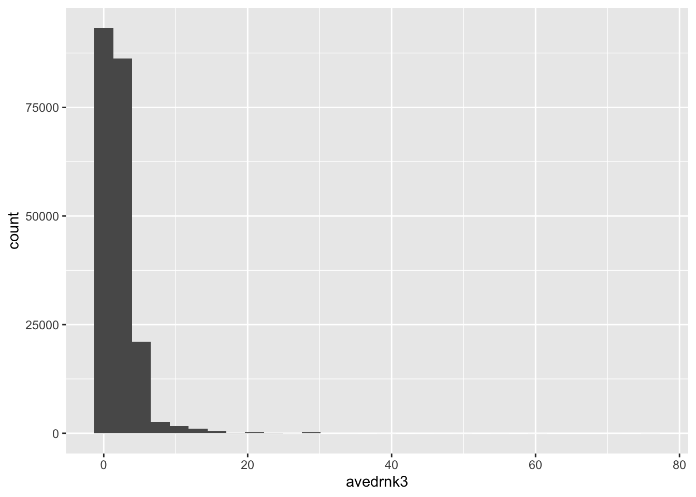
Plotting - Histogram
Many of us might know what
avedrnk3means, but your readers/preceptors don’t know what it means.We will specify axis titles using
labslayer.
- If you put
dataandmappingarguments intoggplot(), it will automatically inherit to all layers below (geom_histogramin this case).
ggplot(data = brfss, mapping = aes(x = avedrnk3))+
geom_histogram()+
labs(x = "Number of drinks per day", y = "Count of individuals",
title = "Distribution of average alcoholic drinks per day (on days when drank) in past 30", subtitle = "Source: BRFSS 2021")`stat_bin()` using `bins = 30`. Pick better value with `binwidth`.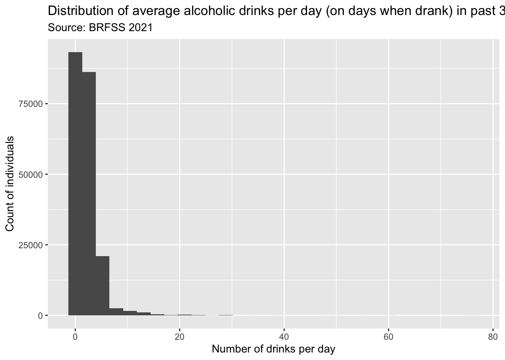
- Both
dataandmappingarguments can go into geometry argument (geom_histogramin this case) too- But note that this will only apply to the geometry you’re specifying (more examples coming)
ggplot()+
geom_histogram(data = brfss, mapping = aes(x = avedrnk3))+
labs(x = "Number of drinks per day", y = "Count of individuals",
title = "Distribution of alcohol days", subtitle = "Source: BRFSS 2021")Plotting - Histogram
- It’s difficult to read some numbers in the axis because the numbers are too sparse.
- We will add more numbers using:
scale_x_continuous: for x-axis labelsscale_y_continuous: for y-axis labels- argument:
breaksto specify values for axis breaks
ggplot()+
geom_histogram(data = brfss, mapping = aes(x = avedrnk3))+
labs(x = "Number of drinks per day", y = "Count of individuals",
title = "Distribution of alcohol days", subtitle = "Source: BRFSS 2021")+
scale_x_continuous(breaks = seq(0, 80, 5))+
scale_y_continuous(breaks = seq(0, 90000, 10000))`stat_bin()` using `bins = 30`. Pick better value with `binwidth`.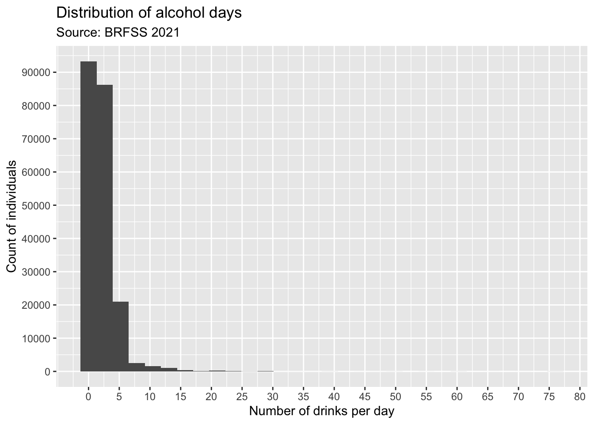
Plotting - Scatter
Now, we will start looking at the relationship between variables.
Say we want to look at the relationship between
avedrnk3andmarijan1.Any problems here?
ggplot(data = brfss, mapping = aes(x = alcday30, y = marijan1))+
geom_point()+
labs(x = "Average alcoholic drinks per day ", y = "Days of Marijuana use")Warning: Removed 304076 rows containing missing values (`geom_point()`).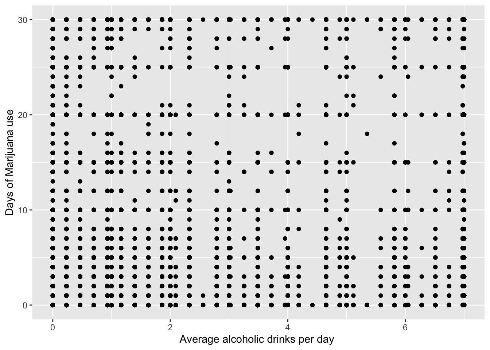
Plotting - Scatter
After looking at this plot, you start wondering how this relationship differs between male and female.
One option of doing this could be creating the same plot but separately for male and female.
To do this, we can add
facet_wraplayer on top of it.
ggplot(data = brfss, mapping = aes(x = alcday30, y = marijan1))+
geom_point()+
labs(x = "Average alcoholic drinks per day ", y = "Days of Marijuana use")+
facet_wrap(~sexvar)Warning: Removed 304076 rows containing missing values (`geom_point()`).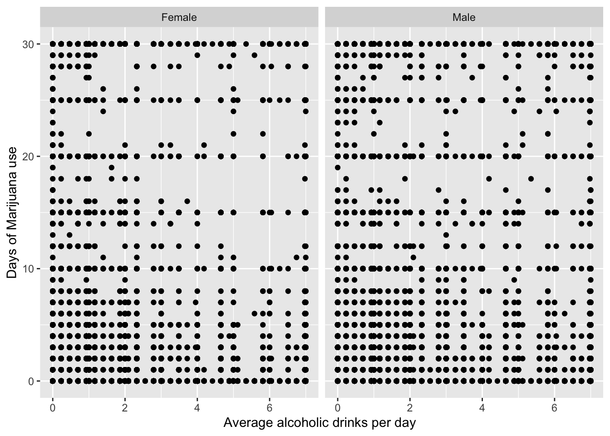
Plotting - Scatter
Now you wonder: how old are they?
One option to do this could be repeating faceting but also by age.
ggplot(data = brfss, mapping = aes(x = alcday30, y = marijan1))+
geom_point()+
labs(x = "Average alcoholic drinks per day ", y = "Days of Marijuana use")+
facet_wrap(sexvar~age_g, ncol = 6)Warning: Removed 304076 rows containing missing values (`geom_point()`).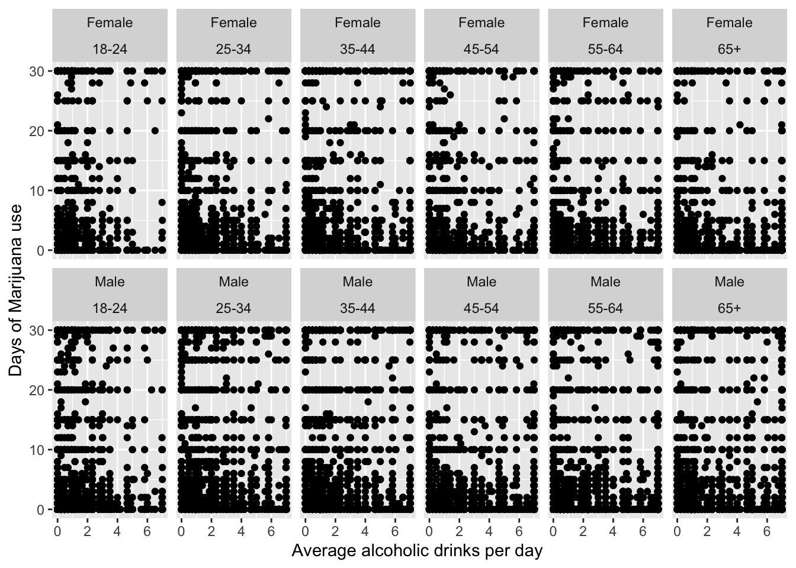
Plotting - Scatter
Now you wonder how old are they?
Another option could be using the color instead of creating 12 panes of plots.
ggplot(data = brfss, mapping = aes(x = alcday30, y = marijan1, col = age_g))+
geom_point()+
labs(x = "Average alcoholic drinks per day ", y = "Days of Marijuana use")+
facet_wrap(~sexvar)Warning: Removed 304076 rows containing missing values (`geom_point()`).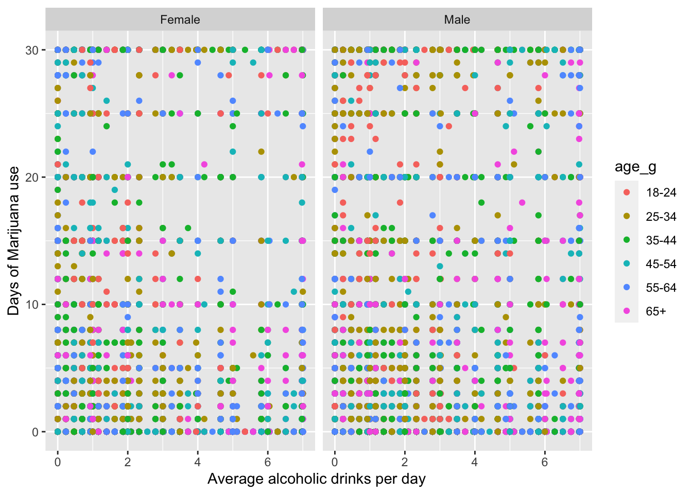
Plotting - Scatter
- If the journal your submitting to required black/white-only figures, you can do this using the shape of the points instead of colors.
ggplot(data = brfss, mapping = aes(x = alcday30, y = marijan1, shape = age_g))+
geom_point()+
labs(x = "Average number of drinking days", y = "Marijuana use")+
facet_wrap(~sexvar)Warning: Removed 304076 rows containing missing values (`geom_point()`).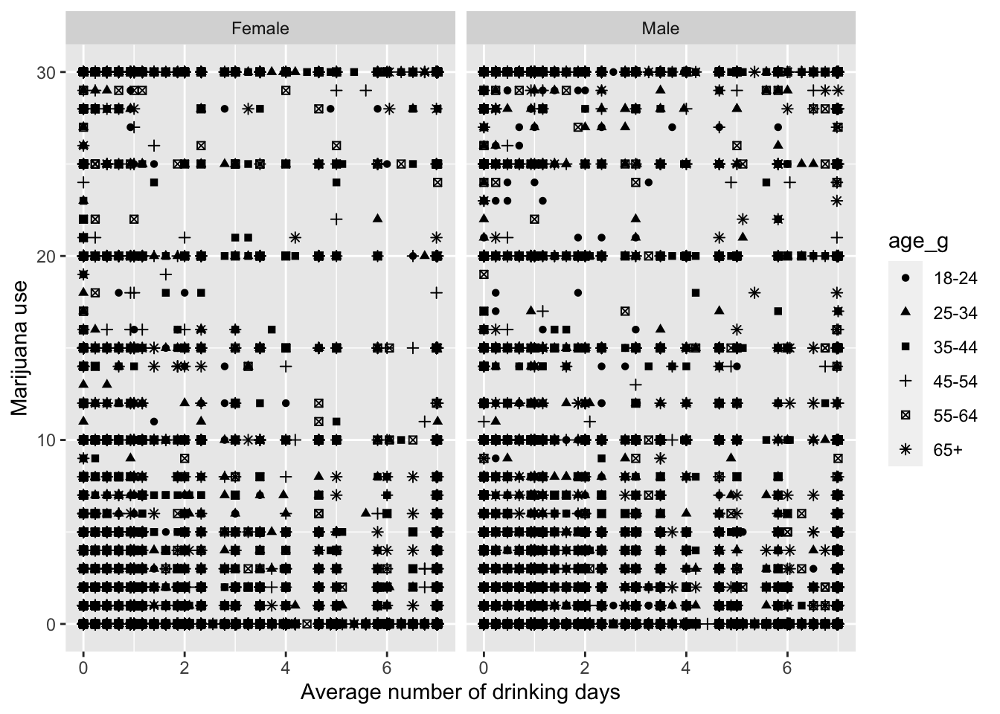
Plotting - Scatter
- One last thing - it’s actually pretty difficult to read the axis titles and texts because the font size is too small.
ggplot(data = brfss, mapping = aes(x = avedrnk3, y = marijan1, shape = age_g))+
geom_point()+ labs(x = "Average number of drinking days", y = "Marijuana use")+
facet_wrap(~sexvar)+
theme(axis.title = element_text(size = 18),
axis.text = element_text(size = 15),
strip.text = element_text(size = 15)) # for facet titlesWarning: Removed 369986 rows containing missing values (`geom_point()`).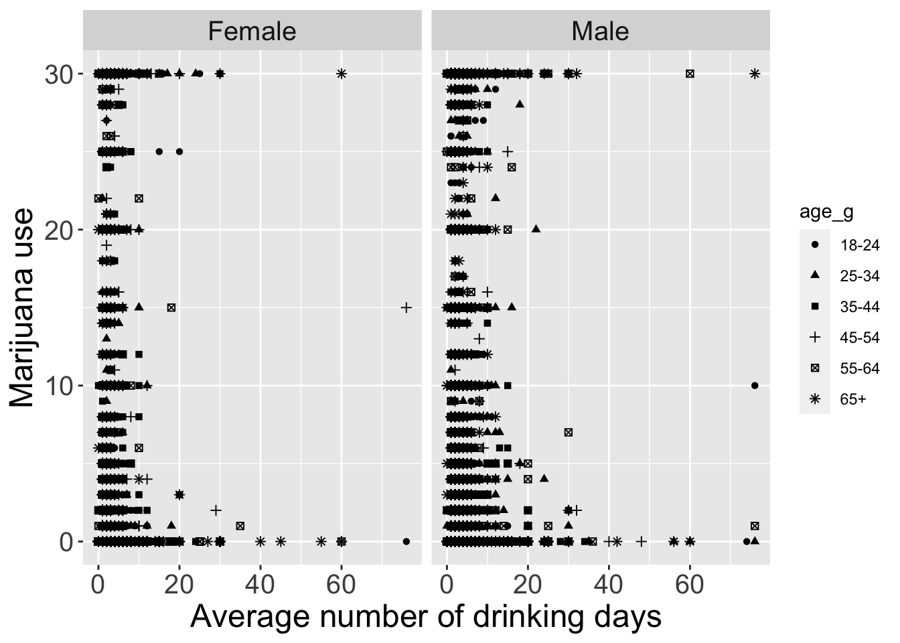
- Which one do you like the most?
Plotting - Line
Use
geom_line()instead ofgeom_point()for line plots.Helpful for visualizing time-trends or relationships.
Example:
ggplot(data = brfss, mapping = aes(x = avedrnk3, y = marijan1, shape = age_g))+
geom_line()+
labs(x = "Average number of drinking days", y = "Marijuana use")+
facet_wrap(~sexvar)+
theme(axis.title = element_text(size = 18),
axis.text = element_text(size = 15),
strip.text = element_text(size = 15)) # for facet titlesPlotting - Bars
Histogram is one type of bar graph that shows frequency of observations.
Bar graph are especially helpful for binary/categorical variables.
- Scatter and line plots might not work well for categorical variables.
What is the distribution of race by gender?
- By default,
geom_barwould setposition = 'stack':
ggplot(brfss)+
geom_bar(aes(x = sexvar, fill = imprace))+
labs(x = "Sex", y = "Count")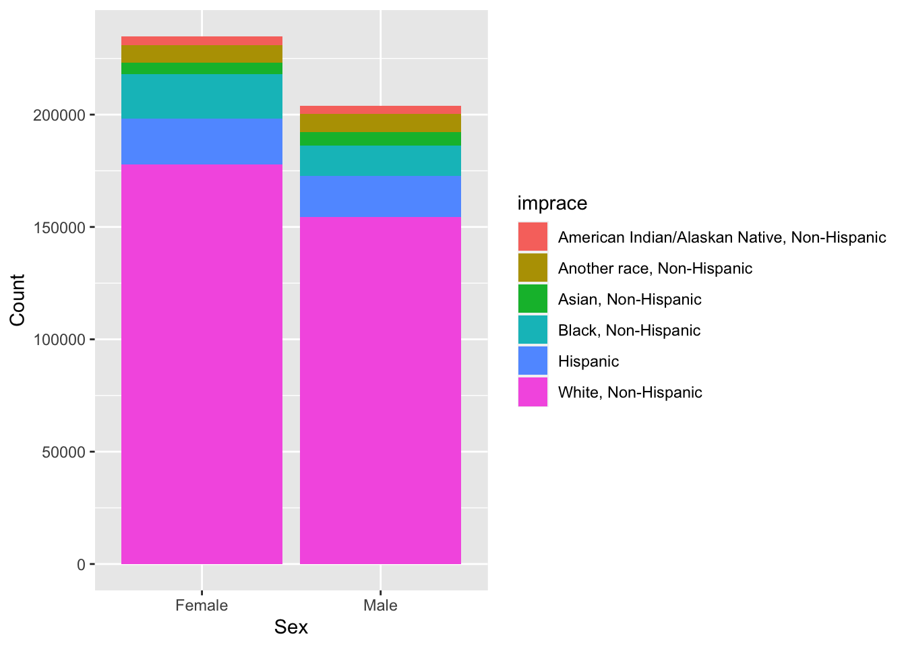
- We can also put it side-by-side:
ggplot(brfss)+
geom_bar(aes(x = sexvar, fill = imprace),
position = 'dodge')+
labs(x = "Sex", y = "Count")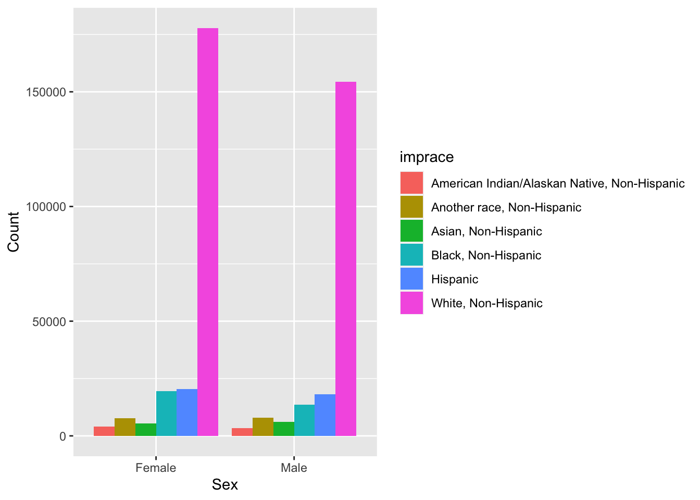
Data wrangling to visualization
One advantage of
ggplot2is that it’s highly flexible.You can directly plot wrangled data without having to save it to another object.
In this example, we will visualize the proportion of race (
imprace) in each sex (sexvar).
- First, wrangle our individual-level data to show proportion of each race by sex.
brfss%>%
group_by(sexvar, imprace)%>%
summarise(num = n())%>% # calculate count by sex and race
ungroup()%>%
group_by(sexvar)%>%
mutate(denom = sum(num), # calculate count for all race by sex
proportion = num/denom)%>%
knitr::kable()| sexvar | imprace | num | denom | proportion |
|---|---|---|---|---|
| Female | American Indian/Alaskan Native, Non-Hispanic | 3954 | 234883 | 0.0168339 |
| Female | Another race, Non-Hispanic | 7684 | 234883 | 0.0327142 |
| Female | Asian, Non-Hispanic | 5374 | 234883 | 0.0228795 |
| Female | Black, Non-Hispanic | 19593 | 234883 | 0.0834160 |
| Female | Hispanic | 20467 | 234883 | 0.0871370 |
| Female | White, Non-Hispanic | 177811 | 234883 | 0.7570195 |
| Male | American Indian/Alaskan Native, Non-Hispanic | 3456 | 203810 | 0.0169570 |
| Male | Another race, Non-Hispanic | 8000 | 203810 | 0.0392522 |
| Male | Asian, Non-Hispanic | 6183 | 203810 | 0.0303371 |
| Male | Black, Non-Hispanic | 13539 | 203810 | 0.0664295 |
| Male | Hispanic | 18221 | 203810 | 0.0894019 |
| Male | White, Non-Hispanic | 154411 | 203810 | 0.7576223 |
Data wrangling to visualization
Then, we use information from wrangled data for ggplot.
Note that we’re using
stat = 'identity'so that we’re plotting the value of a variable, instead of count of rows in the data.
brfss%>%
group_by(sexvar, imprace)%>%
summarise(num = n())%>% # calculate count by sex and race
ungroup()%>%
group_by(sexvar)%>%
mutate(denom = sum(num), # calculate count for all race by sex
proportion = num/denom)%>%
ggplot()+
geom_bar(aes(x = sexvar, y = proportion, fill = imprace), stat = 'identity')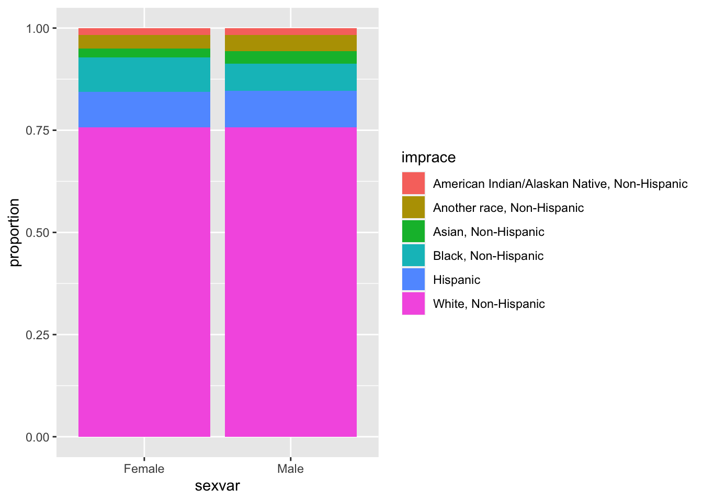
Plotting - Figure formatting
You may now want to polish your design a little bit.
There are A LOT of formatting that needs to/can happen, but the important thing is that the purpose of plotting is to facilitate communication.
- No shortcut: Trial-and-error and exposing yourself to various ways of plotting are really the keys to become proficient.
Which one makes more sense?
ggplot(brfss)+
geom_bar(aes(x = sexvar, fill = imprace), colour = 'grey30')+
labs(x = "Sex", y = "Count", title = "Option 1")+
scale_fill_brewer(palette = 'Pastel2', name = "Race")+
theme_bw()+
theme(legend.position = 'bottom')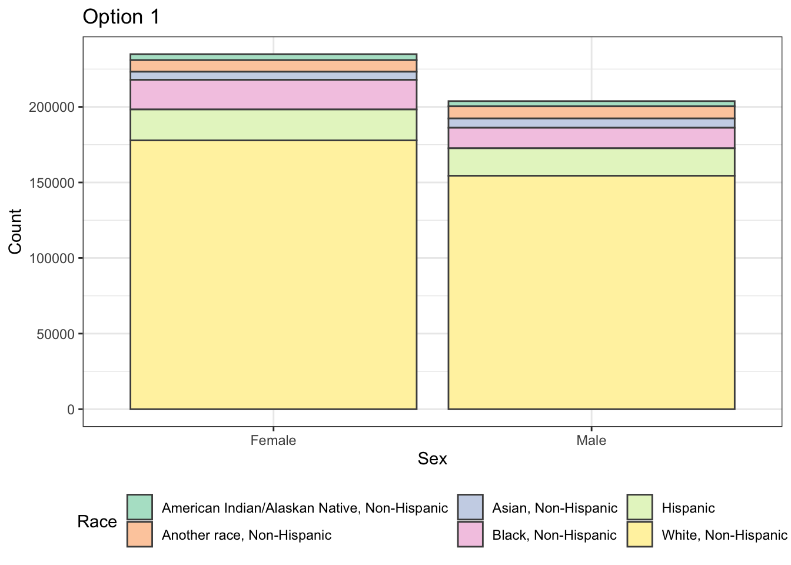
ggplot(brfss)+
geom_bar(aes(x = sexvar, fill = imprace), colour = 'grey30')+
labs(x = "Sex", y = "Count", title = "Option 2")+
scale_fill_brewer(palette = 'Blues', name = "Race")+
theme_bw()+
theme(legend.position = 'bottom')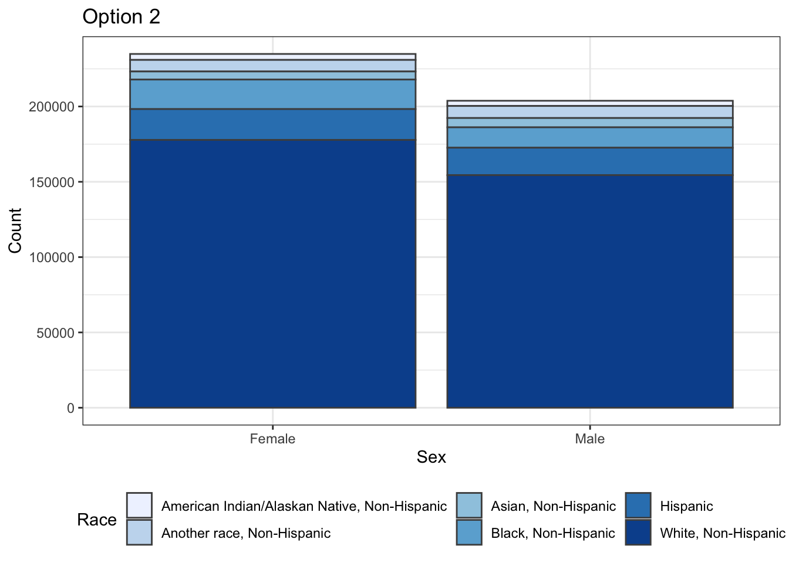
Plotting - Figure formatting
- Note that your upper layer will automatically override decisions.
ggplot(brfss)+
geom_bar(aes(x = sexvar, fill = imprace), colour = 'grey30')+
labs(x = "Sex", y = "Count")+
scale_fill_brewer(palette = 'Blues', name = "Race")+
scale_fill_brewer(palette = 'Pastel2', name = "Race")+
theme_bw()+
theme(legend.position = 'bottom')Scale for fill is already present.
Adding another scale for fill, which will replace the existing scale.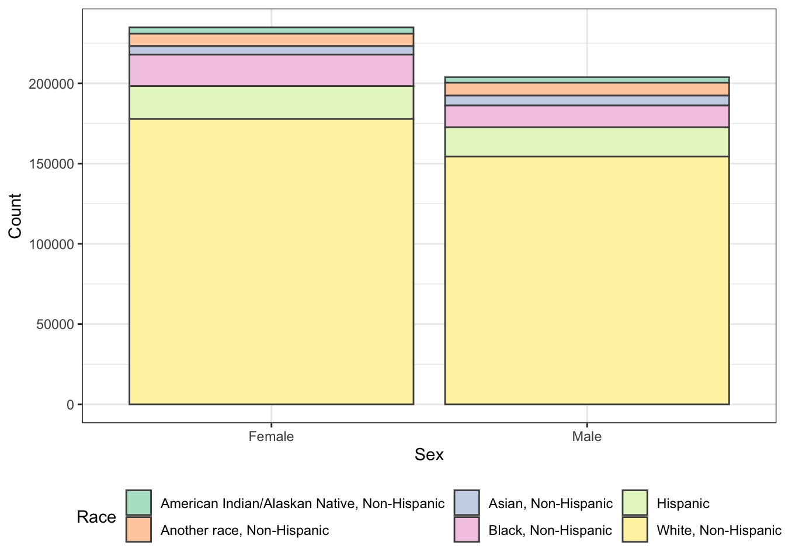
Other considerations
Make sure you use color-blind friendly palette when using multiple colors.
- Estimates suggest that red/green color blindness affects approximately 8% of males and around 0.5% of females of Northern European descent.
Colors on other screens (esp. projectors!!) can look different than your laptop screen:
- Make sure you have enough contrast between colors so that the audience can still detect the difference even if the color slightly fades out
Useful resources
CS&SS 569 Visualizing Data and Models
- Course website has great learning materials and practice sets
- Link to website
ggplot2 package document: link
ggplot2 cheatsheet: link
Stackoverflow
ChatGPT